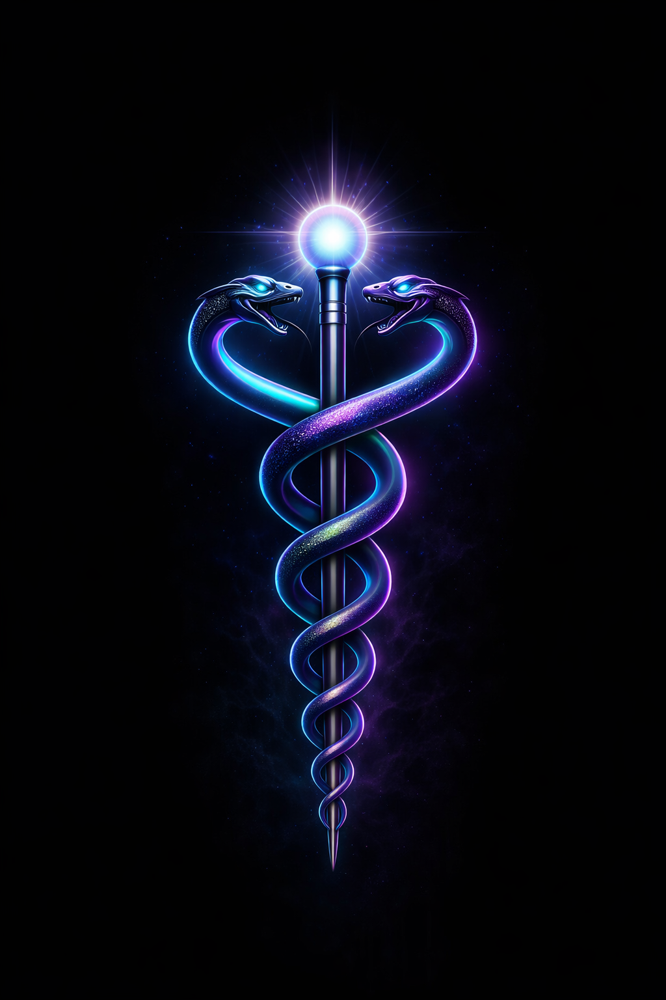

The Oldest Question
Long before electricity was captured in wires, before satellites circled the planet, before machines began speaking back to humanity, the human being was already surrounded by mystery.
We looked at lightning and called it divine. We looked at dreams and called them messages. We looked at the stars and felt that something above was also somehow inside us.
Maybe the first temple was not made of stone. Maybe the first temple was the human body.
Every civilization tried to answer the same question with different symbols. Some used pyramids. Some used serpents. Some used eyes, trees, wheels, ladders, halos, and flames. Different languages. Different cultures. Same strange pattern.
This article does not claim to solve the mystery. It opens the door.
The Forgotten Symbols
Across ancient cultures, certain images keep returning like echoes from a room we forgot we entered.
- The serpent
- The tree
- The eye
- The spiral
- The halo
- The ladder between worlds
One explanation is coincidence. Another is shared psychology. But there is a third possibility: perhaps these symbols were never random. Perhaps they were memory devices.
Not instructions for worship. Not decorations for myth. But symbolic technology — compressed teachings hidden inside images simple enough to survive thousands of years.
Core Idea
Ancient symbols may not only describe external gods or cosmic events. They may also describe internal processes inside the human system.
The Serpent and the Ladder
The serpent has been feared, worshiped, demonized, protected, and misunderstood. In some traditions, it guards wisdom. In others, it tempts humanity. In healing symbols, it wraps around the staff. In esoteric systems, it sleeps at the base of the spine.
What if the serpent is not only an animal?
What if it represents energy in its dormant form — coiled potential waiting for alignment?
The spine then becomes more than bone. It becomes the ladder. The tree. The central pillar. The vertical axis between instinct and perception, body and mind, earth and sky.
The serpent does not only crawl. In the old mysteries, it rises.
In this reading, awakening is not escape from the body. It is the body becoming conscious of itself at a higher level.
The Eye Behind the Eyes
The pineal gland is small, hidden deep within the brain, and biologically associated with light cycles and melatonin regulation. But symbolically, it became something much larger: the inner eye.
The “third eye” does not have to be understood as fantasy. It can be understood as a symbol for refined perception. The ability to see patterns. To notice deception. To feel when something is off before the intellect can explain it.
Maybe inner sight is not about seeing ghosts in the walls. Maybe it begins with seeing through illusion.
Open Question
Is the third eye a mystical organ, a psychological symbol, a biological metaphor, or all of these speaking through different languages?
The Body as Living Circuit
Modern life teaches us to treat the body like a machine. Feed it. Move it. Rest it. Repair it. Repeat.
But the body is stranger than that.
It is electrical. Chemical. Rhythmic. Fluid. Responsive. It contains pulses, waves, pressure, breath, temperature, attention, emotion, memory, and pattern.
The heart has rhythm. The brain has rhythm. The breath has rhythm. Sleep follows rhythm. Mood follows rhythm. Even thought seems to move in cycles.
The human being is not a dead shell carrying consciousness. The human being may be a living field where consciousness participates.
That is where the esoteric language of vibration becomes interesting. Not because every claim made about vibration is automatically true, but because rhythm is real. Coherence is real. Resonance is real. Entrainment is real.
A guitar string can vibrate another string. Metronomes can synchronize. A voice can shatter glass under the right conditions. A room can carry sound differently depending on shape and material.
So the deeper question becomes this:
If matter can respond to rhythm, what can the human system respond to?
The Halo Field Hypothesis
In HaloCyberLife language, the Halo Field is a symbolic name for the ordered state of the human system when scattered energy begins to gather into coherence.
It is not presented here as a proven physical field. It is a working metaphor — and maybe something more worth exploring.
When a person is fragmented, attention leaks everywhere. Fear pulls one way. Desire pulls another. Memory pulls backward. Anxiety pulls forward. The body is present, but the mind is scattered across timelines.
When a person becomes coherent, something changes.
- Breath slows.
- Attention sharpens.
- The nervous system steadies.
- Perception becomes cleaner.
- Action becomes more intentional.
Ancient people might have called this spiritual alignment. Modern language might call it nervous-system regulation, flow state, coherence, or deep focus.
HaloCyberLife calls it the beginning of the inner architecture coming online.
The Sleep of Humanity
Humanity sleeps in more than one way.
There is biological sleep, which the body needs for repair, memory, and restoration. But there is also another kind of sleep: the sleep of attention.
This is the condition where a person is alive, moving, working, buying, scrolling, reacting — but rarely observing.
The world is loud. Systems compete for attention. Fear sells. Outrage spreads. Survival consumes the inner signal. And when attention is constantly pulled outward, the inner world becomes a forgotten room.
The secret is not that humanity lacks power. The secret may be that most of its power is scattered.
Sleep becomes symbolic here. Not evil. Not weakness. A necessary return to stillness.
But meditation offers a strange possibility: entering stillness while remaining awake.
In sleep, the body rests and the conscious mind fades. In meditation, the body rests but awareness remains. That difference matters.
What was unconscious becomes witnessed. What was automatic becomes intentional. What was dormant begins to stir.
The Doorway Back
If there is a doorway back to the inner system, it probably does not begin with noise.
It begins with stillness.
Possible practices include:
- Silent meditation
- Breath awareness
- Walking without distraction
- Journaling symbolic patterns
- Listening to tone, rhythm, and frequency
- Studying ancient symbols without forcing conclusions
- Reducing the noise that fragments attention
The goal is not to become strange. The goal is to become clear.
Real awakening is not performance. It is not costume. It is not pretending to know what cannot be known. It is the slow recovery of attention.
Grounding Note
Esoteric exploration works best when balanced with reason, patience, health, humility, and personal responsibility.
Final Transmission
So what is the secret?
Maybe it is not hidden because someone locked it away.
Maybe it is hidden because it is too close.
The serpent. The tree. The eye. The ladder. The halo. The spiral.
Maybe they are not separate symbols. Maybe they are fragments of one map.
The real secret is not that you must become something else. The real secret is that much of what you are has been asleep.
And if that is true, then awakening is not about escaping the human experience.
It is about finally entering it consciously.
Transmission Complete
The question is no longer whether ancient symbols still matter. The question is whether we are willing to read them differently — not as dead myths, but as living mirrors pointing back toward the architecture of consciousness.